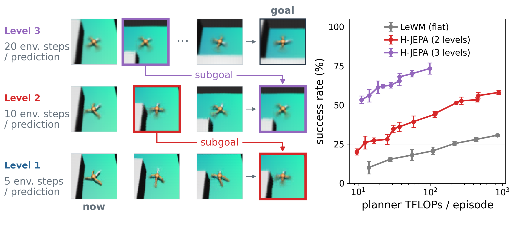
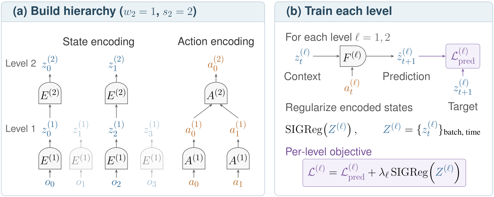
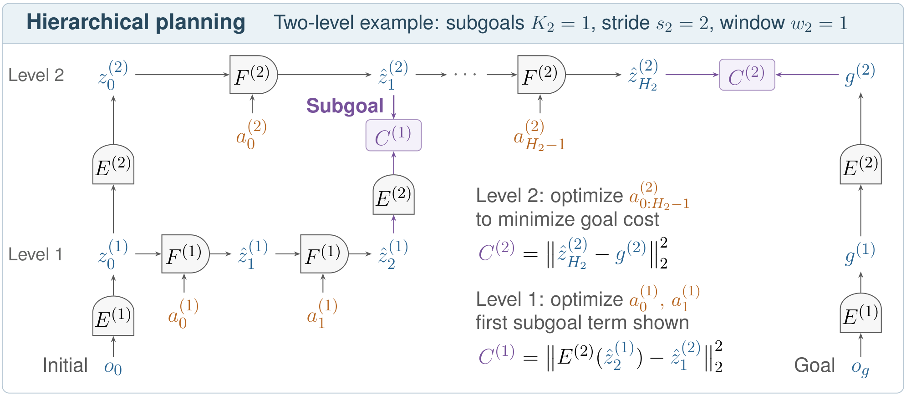
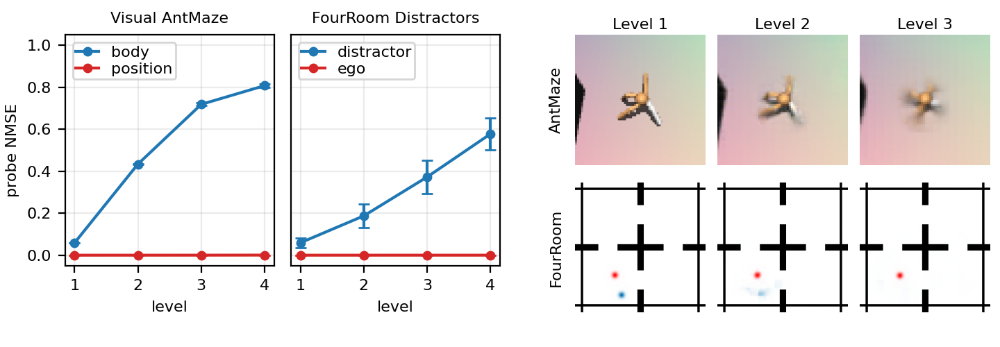
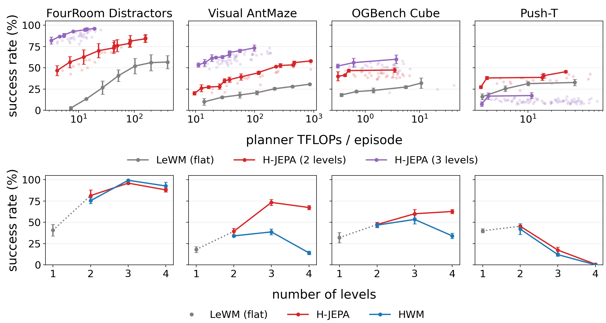
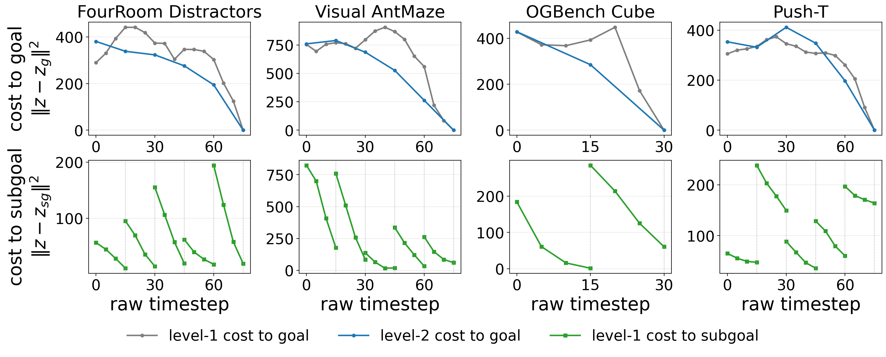
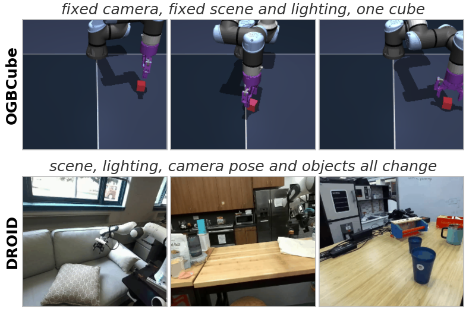
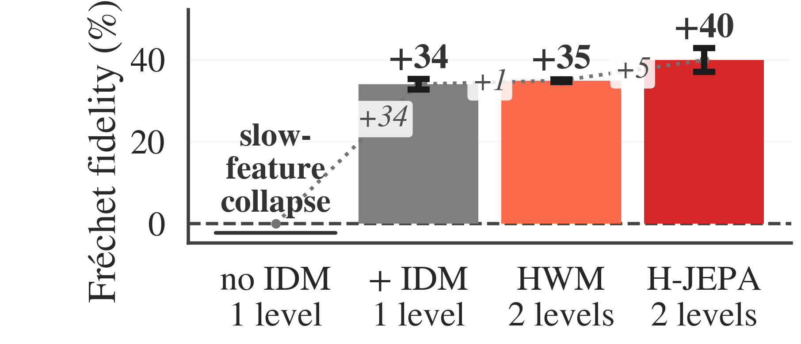
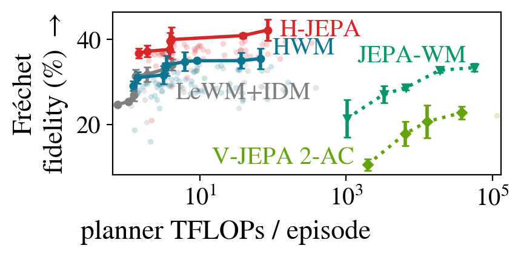

Summary
Long-horizon planning requires reasoning at different timescales and levels of abstraction. A robot navigating a maze needs to decide where to go, while also controlling how to move. A world model that predicts every fine-grained step in a single latent space has to solve both problems at once: prediction errors accumulate, and fast-changing details can obscure progress toward the goal.
We introduce H-JEPA, an end-to-end recipe for learning a hierarchy of Joint-Embedding Predictive Architectures. Each level predicts farther ahead in its own learned latent space. Planning runs top-down: the highest level plans toward the goal, its predictions become subgoals for the level below, and the lowest level produces primitive actions.
When factors in the data evolve at separated timescales, higher levels discard fast, unpredictable detail while preserving slower, task-relevant state. Across four simulated navigation and manipulation environments, hierarchical planning improves over a flat JEPA. On Visual AntMaze, a three-level hierarchy raises success from 18% to 73%. With inverse-dynamics supervision, the approach also improves offline planning fidelity on diverse real-robot videos from DROID at lower planner compute.

Method
H-JEPA learns from observation–action trajectories, without reward or pixel-reconstruction objectives. It combines a hierarchy of predictive representations with a planner that uses those representations at their corresponding timescales.
Hierarchical predictive learning
Each level has its own state encoder, action encoder, and latent predictor. The first level encodes images and primitive actions. Higher levels encode states from the level below and aggregate intervening actions, so each prediction spans a longer interval. In our simulation experiments, a stride of two doubles the timescale at each successive level.
At every level, the model learns to predict the next latent state conditioned on actions. A SIGReg regularizer prevents representation collapse by encouraging an isotropic Gaussian embedding distribution. The whole hierarchy is trained jointly, with gradients from higher-level objectives flowing through lower-level encoders. All reported experiments use pointwise upper-level state encoders.

Top-down planning
We encode the current observation and goal at every level. The highest-level planner optimizes a sequence of macro-actions to bring its final predicted state close to the goal. Its predicted states then become subgoals for the planner below.
Each lower-level planner refines these subgoals over a shorter timescale. To compare its predictions with an upper-level subgoal, it maps them through the upper-level encoder. We optimize action sequences by gradient descent at every level. For closed-loop control, level 1 executes an action prefix, the model receives a new observation, and planning repeats.

Experimental results
We evaluate navigation in Visual AntMaze and FourRoom Distractors, manipulation in Push-T and OGBench Cube, and offline planning on real robot trajectories from DROID. The flat baseline, LeWM, corresponds to training the first-level JEPA on its own.
Learning abstractions
Higher levels selectively lose fast-varying information while retaining slower state. In AntMaze, the ant’s body configuration becomes less recoverable with depth, while its position remains accurately recoverable. In FourRoom, the independently moving distractor fades from higher-level representations while the controlled agent remains visible.

This selectivity is strongest when entities evolve at well-separated timescales. It is not universal: the manipulation datasets have smaller temporal-frequency gaps and show little selective abstraction.
Planning performance
On FourRoom, AntMaze, and Cube, adding hierarchy levels up to three improves the success–compute frontier: the planner can achieve higher success with less compute. Two-level H-JEPA also matches or exceeds LeWM across tested budgets on Push-T. Deeper models perform poorly there, likely because short episodes leave much less usable training data for longer training clips.

To isolate the value of distinct representations, we compare against HWM with matched data and training settings, replacing upper-level encoders with identity maps. HWM benefits from temporal hierarchy in a shared latent space. H-JEPA improves further on AntMaze and Cube; on AntMaze, three-level H-JEPA achieves nearly twice HWM’s success.
Why hierarchy helps
A better space for measuring progress. A fine-grained representation may assign a large distance to states that differ in pose but are equally close to the goal. Projecting a level-1 rollout into a more abstract latent space improves planning even without invoking upper-level planners. Across every tested multilevel AntMaze model, at least one upper-level cost improves success over the native level-1 cost.

Shorter, more manageable planning problems. Temporal decomposition reduces the number of sequential predictions and the action-search horizon. It also provides more consistent local objectives: across all four simulated environments, costs for tracking level-2 subgoals decrease more consistently than costs for matching the final goal directly.

Real-world videos: DROID
DROID introduces variation in scenes, lighting, and objects across episodes. Here, a purely predictive objective can encode the stable background while discarding the moving robot. We add an inverse-dynamics loss that predicts the action connecting consecutive latent states, encouraging the representation to retain information about the agent.

We evaluate plans offline using Fréchet fidelity, which compares the full three-dimensional end-effector path with an expert trajectory. A stationary arm scores 0%; the expert path scores 100%. This measures path fidelity, rather than closed-loop task success.


The learned second level improves performance on top of the inverse-dynamics baseline while reducing planner compute. The paper includes the full evaluation protocol, metric calibration, ablations, and additional qualitative results.
Takeaway
H-JEPA learns world models at multiple timescales and levels of abstraction, end-to-end. Hierarchy helps in two complementary ways: it decomposes long-horizon planning into shorter subproblems, and it provides more abstract representations in which to measure progress toward a goal.
Higher levels can learn to ignore fast, unpredictable detail while retaining slower state useful for planning. Combined with inverse-dynamics supervision for diverse real-world scenes, this offers a route toward more efficient visual planning from both simulated experience and real robot videos.
BibTeX
@misc{zhang2026hjepa,
title = {H-JEPA: End-to-End Learning of Hierarchical
World Models for Visual Planning},
author = {Zhang, Wancong and Terver, Basile and Rabbat, Michael
and LeCun, Yann and Balestriero, Randall},
year = {2026},
url = {https://h-jepa.com/}
}